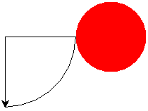
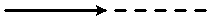
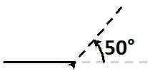

Conseils
Même si ce site permet de tester de petits programmes en Python,
il est fortement conseillé de sauvegarder ces programmes à
l'aide d'un environnement de programmation en Python
(Pyzo, Geany, etc...). Pour cela, il faut donner à chaque programme
un nom explicite puis les «organiser» dans les répertoires adéquats.
On pourra commencer par créer un dossier [Module_Turtle].
Ce dossier contiendra tous les programmes (scripts) rédigés à
partir de cette page.
Ensuite, il faut prendre l'habitude d'insérer des commentaires (pertinents)
dans son programme. En Python, ces commentaires sont
précédés d'un dièse «#». Ils ne sont pas interprétés lors
de l'exécution des instructions.
Remarque importante
Les programmes en Python rédigés avec ce site
ne doivent pas comporter d'accents !
A cause d'un seul caractère accentué, le programme est susceptible de ne pas
être exécuté correctement.
Ce problème d'encodage des caractères sera étudié plus tard au cours de l'année.
En reprenant le script d'exemple sur la spirale, modifier les
instructions (angle, couleur, etc...) afin d'aboutir à
des dessins originaux. Par exemple :
- Spirale n°1
- Spirale n°2
- Spirale n°3
from turtle import *
stylo = Turtle()
n = int(input('Valeur ?'))
for i in range(n):
stylo.forward(3*i)
stylo.right(120)
exitonclick() # La fenêtre se ferme en cliquant dessus
from turtle import *
stylo = Turtle()
stylo.color('red')
n = int(input('Valeur ?'))
for i in range(n):
stylo.forward(3*i)
stylo.left(120)
exitonclick() # La fenêtre se ferme en cliquant dessus
from turtle import *
stylo = Turtle()
stylo.color('blue')
n = int(input('Valeur ?'))
for i in range(n):
stylo.circle(i)
stylo.left(120)
exitonclick() # La fenêtre se ferme en cliquant dessus

Les instructions ci-dessous permettent de tracer la figure ci-contre.
Traduire ces instructions à l'aide du module turtle de
Python.
| Traitement |
|---|
Tracer un quart de cercle
de rayon 100 pixels.
Tourner à droite de 90° et avancer de 50 pixels sans
tracer.
Tracer un disque de rayon 50 pixels et de couleur rouge.
Retourner le crayon et avancer de 50 pixels sans tracer.
Tracer un segment de 100 pixels, tourner à gauche de 90°
puis tracer un nouveau segment de 100 pixels. |
- Une piste ?
- Une solution ?
Le quart de cercle s'obtient avec la méthode
.circle(),
le disque avec la méthode
.dot().
from turtle import *
stylo = Turtle() # Le crayon
stylo.circle(100, 90) # quart de cercle (90°) de rayon 100
stylo.right(90) # car le stylo devient orienté vers le haut
stylo.up() # pour avancer sans tracer
stylo.forward(50)
stylo.down() # pour tracer
stylo.dot(50, 'red') # disque rouge de rayon 50
stylo.left(180) # demi-tour
stylo.up()
stylo.forward(50)
stylo.down() # pour tracer les rayons du quart de cercle
stylo.forward(100)
stylo.left(90)
stylo.forward(100)
exitonclick()
Écrire un programme qui permet de tracer la figure ci-contre.
Tous les segments ont la même longueur, on stockera donc cette longueur
dans une variable : cela évitera de modifier de nombreuses lignes du
programme uniquement pour changer la longueur de référence de ce tracé.
- Une piste ?
- Une autre piste ?
- Une solution ?
La base est un carré, le toit est formé par deux côtés d'un
triangle équilatéral.
Les méthodes .left() et
.right() permettent au
crayon de s'orienter de manière relative.
Les pointillés montrent la direction dans laquelle le crayon
appliquera la prochaine instruction de type
.forward().
Avant l'instruction .left(50) :

Après l'instruction .left(50) :

from turtle import *
stylo = Turtle()
longueur = 50 # Important : la longueur est stockée sous forme de constante globale
stylo.forward(longueur) # Le sol
stylo.left(90)
stylo.forward(longueur) # Mur droit
stylo.left(30)
stylo.forward(longueur) # Toit droit
stylo.left(120)
stylo.forward(longueur) # Toit gauche
stylo.left(30)
stylo.forward(longueur) # Mur gauche
stylo.hideturtle() # On masque le crayon
exitonclick()
Le dessin ci-contre représente 10 carrés de 30 pixels de côté,
espacés chacun de 10 pixels. Écrire un script dans lequel le crayon :
- Trace un carré ;
- Avance pour s'éloigner de 10 pixels de ce carré ;
- Trace un nouveau carré ; etc...
Le nombre de carrés à tracer, la longueur d'un côté du carré et l'espace
(la distance) entre deux carrés consécutifs doivent être stockés
dans des variables au nom explicite. On peut définir d'autres variables si besoin.
- Une piste ?
- Une autre piste ?
- Une solution ?
Il ne faut pas tout faire en même temps.
Commencer par définir les variables puis tracer un
carré à l'aide de ces variables. A la fin de ce
tracé, écarter le crayon pour se mettre en
position afin de tracer le carré suivant.
Il y a deux répétitions :
- Une première boucle
for doit
permettre de tracer un carré ;
- Cette boucle est imbriquée à l'intérieur
d'une autre boucle
for
qui, elle, tracera la totalité des carrés.
Attention : ces deux boucles ne peuvent pas être
basées sur le même nom de variable...
from turtle import *
# On définit des variables
n = 4 # Nombre de côtés d'un carré
l = 30 # Longueur d'un côté d'un carré
a = 90 # Angle "gauche" de rotation pour le tracé d'un carré
e = 10 # Espace entre deux figures
nombre = 10 # Nombre de figures
stylo = Turtle() # Le crayon
stylo.speed(0) # Pour tracer vite...
# On programme les instructions
for i in range(nombre): # Nombre de figures à tracer
for j in range(n): # Boucle du tracé d'un carré
stylo.forward(l)
stylo.left(a)
# Passage à la figure suivante
stylo.up() # On n'écrit plus
stylo.forward(l+e) # On avance d'un côté et de l'espace
stylo.down() # On peut écrire
stylo.hideturtle()
exitonclick()